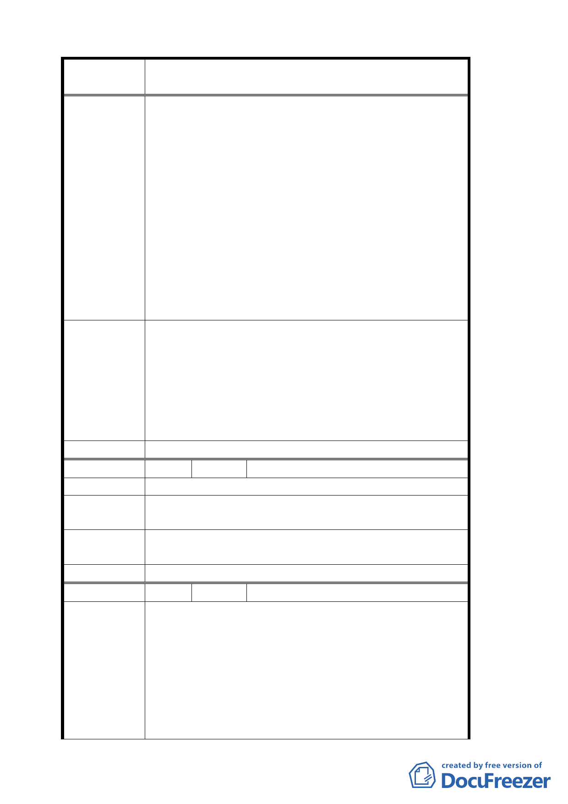

案 名 變更臺北市文山區指南里、老泉里部分保護區為休閒
產業特定專用區都市計畫案
確規劃。
十二、希望大家能進行更廣泛的討論以期獲得最大的
利益。
十三、希望能夠保留目前的貓空文化不要讓財團進駐
貓空。
十四、保留貓空原有風貌是比較恰當的，國際友人對
於貓空的風景與茗茶讚譽有加，無形也提升了
台灣的國際形象，如果大興土木作規劃只怕會
造成更大的破壞，希望能保留原貌作適當規
劃，讓貓空成為新的國際觀光景點。
十五、關於保險與税的問題只要是有利於農友的，農
會都會樂觀其成，但首要的條件是不要破壞大自
然的原有風貌，畢竟這是大家所樂見的。
1. 休閒產業特定專用區內既有合法建築之申請基地面
積修正為 1000 平方公尺。
專案小組審
查結論
2. 有關稅率適用問題，移請建設局及稅務機關參考辦
理。
3. 有關原有不符本計畫土地使用分區管制之建築，修
正為三年內完成申請建築核准，核准二年內建築完
成。
委 員會決 議 同編號 11 決議。
編 號 １６ 陳情人 周仁智
陳情理由
建議辦法
特請貴會審議此規劃案時，能通知敝人參與，讓敝人
能有機會貢獻。
專案小組審
查結論
已邀請陳情人參加會議並發表意見。
委 員會決 議 同專案小組審查結論。
編 號 １７ 陳情人 周議員柏雅
所謂「休閒產業特定專用區」之名稱應更改為「休閒
農業特定專用區」。當地以農為本之特色仍應保持，政
府應以務農固本為該計畫主軸，因此，對於繼續維持
陳情理由
農地農用者，應給予特別的獎勵及各種稅捐之優惠；
對於不作農業使用而要轉型為各種商業消費設施者，
則應合理符合相關申請要件。
本都市計畫變更案之目的是要增加地區發展的選擇而
不是要封殺地方傳統農業之永續發展，建請都委會委
一五